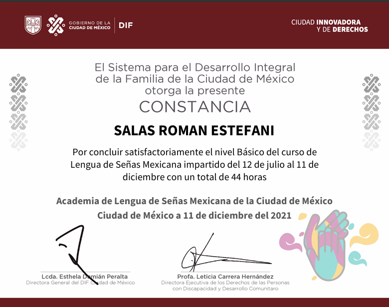
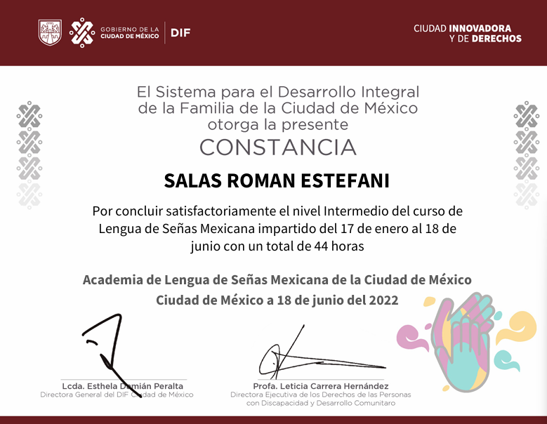
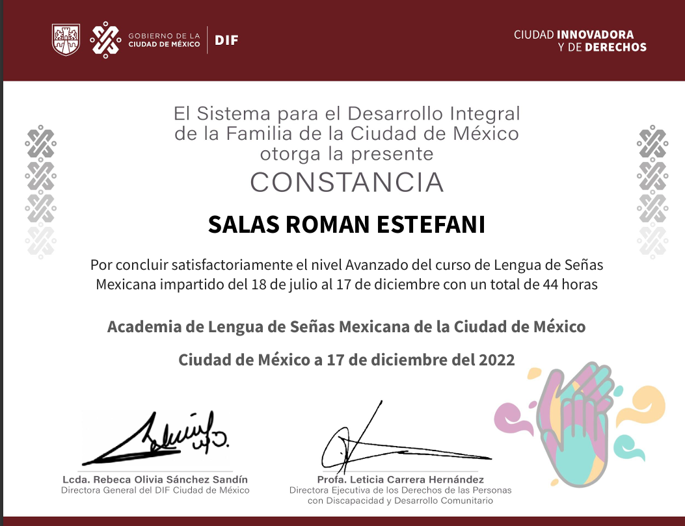
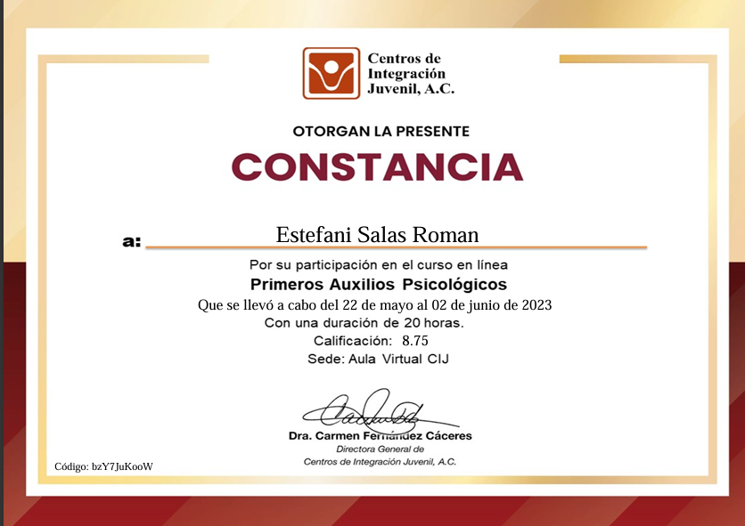
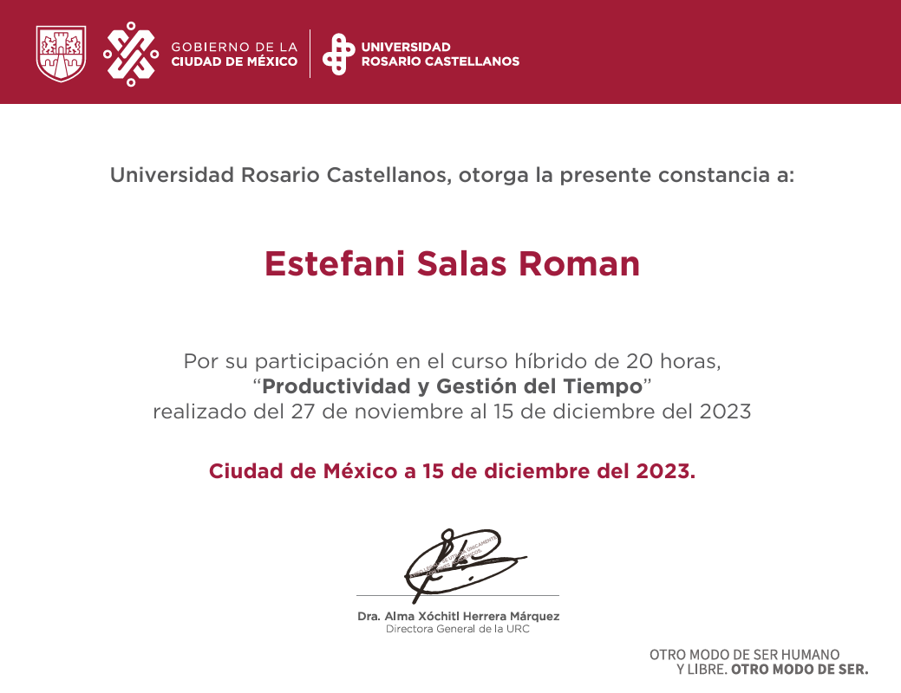
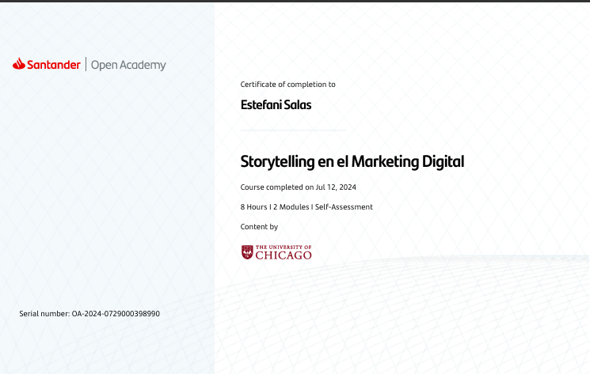

LSM BÁSICO
En 6 meses aprendí el vocabulario básico de LSM.

LSM INTERMEDIO
En 6 meses aprendí vocabulario más complejo y acerca de la cultura e historia de la LSM.

LSM AVANZADO--
Al termino de estos meses, ya puedo sostener una conversación más larga con una persona sorda.

PRIMEROS AUXILIOS PSICOLOGICOS--
Con esta constancia se acredita que estoy capacitada para brindar PAP

PRODUCTIVIDAD Y GESTION DE TIEMPO
El objetivo de este curso fue conocer como la organización ayuda en la eficiencia.

STORYTELLING
De manera general aprendí la relación entre el Storytelling y el Marketing Digital.